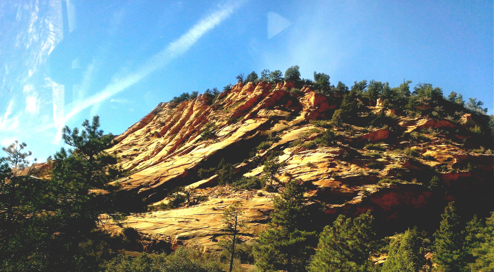

Story
For my full itinerary, scroll to the bottom or click here.
Story
Story
Story
Story
Story
The trail down to Skeleton point only took us about 3 hours round trip. The later in the day it became, the more people we saw on the trail. The worst of it is definitely the switchbacks at the end, hah!
The views were of course fantastic. It seems the landscape changes quite a bit as you traverse the trail. You'll find yourself on the other side of a hill or closer to the bottom and have a totally new perspective. I hope I get to go back sometime for a hike to the bottom!
We made it to Skeleton Point and paused for a bit to take in the view of the river. It was still pretty far away--perhaps 2,000 ft of elevation and several miles of trail--but I had a small sense of accomplishment nonetheless.
We passed the Desert Watchtower again on our way out. In hindsight we could have gone there on our way to Zion but this way we weren't in a rush. It was a nice building with great views of the Grand Canyon and a few tid bits of information to read about. Certainly worth the stop I would say.
WATCHMAN TRAIL (ZION)
Elevation Gain: 456 ft
Distance: 2 mi. round trip; ~1 hr.
Notes: fairly well travelled, not too difficult
OBSERVATION POINT (ZION)
Elevation Gain: 2,148 ft
Distance: 8 mi. round trip; took us ~4 hrs.
Notes: a bit strenuous but worth it for the views; never a dull moment

TIMELINE
Tuesday PM: LA to Phoenix (across time zone)
Wednesday AM: Leave Phoenix, Hike Sedona
Wednesday PM: Lunch in Flagstaff, Grand Canyon by sunset
Thursday AM: Hike to Skeleton Point
Thursday PM: Thanksgiving Dinner, Dessert Watchtower
Friday AM: Grand Canyon to Horseshoe Bend
Friday PM: Horseshoe Bend to scenic drive through Zion, Watchman Trail
Saturday AM: Hike Observation Point
Saturday PM: Drive Zion to LA via Las Vegas (lunch stop)
Thanks for reading! Check out more travels here.